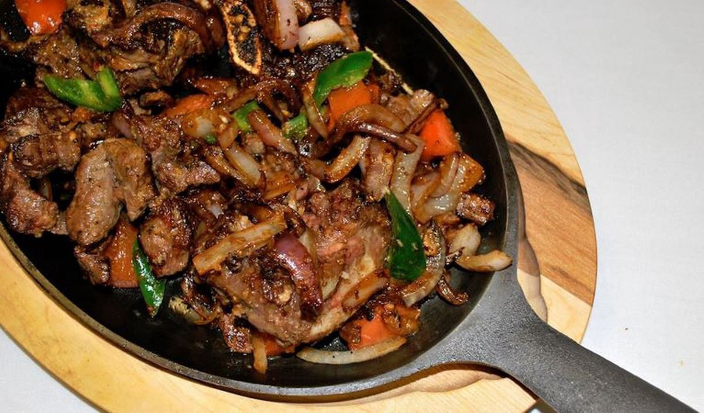

Awaze Tibs

Description:-
Awaze TIbs is one of the most popular and delecious Ethiopian food.
It can be eaten for lunch and dinner.
Ingredients:-
- 1/8 cup peanut oil
- 2 red onions, chopped
- 1 inch fresh ginger, peeled and grated (about 1 1/2 tsp)
- 3 cloves garlic, crushed
- 2 tsp berberé
- 1 cup beef stock
- 1.2 lbs cubed lamb
Steps:-
- Chop the onions and cook them until golden (10–15 min) over medium high, or until you can no longer stand how good the house smells.
- Take your time getting them nice and golden — that’s where all the flavor is.
- Meanwhile, grate the ginger. Grating is the best way to get rid of those tough fibers and helps the ginger to “disappear” into the dish.
- Add the ginger and crushed garlic to the pan and cook a few more minutes.
- Toss in the berberé. Two teaspoons made me sweat… in a good way. Much more and I might have passed out.
- Add the meat and brown it.
- Cover with beef stock and simmer partially covered for about 35 minutes, or until the lamb is tender.
- If you’d like a less soupy texture simmer uncovered. Don’t forget to season it with plenty of salt and pepper.
- Serve with a dollop of plain yogurt, to cool the mouth after each bite.
- Serve hot with injera to friends.